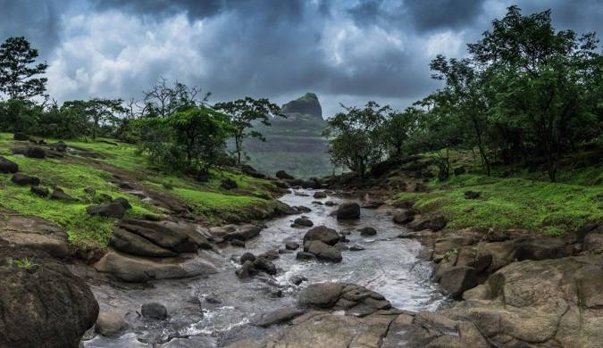

Location/Region: Lonavla / Karjat
Difficulty: Easy
Elevation: Approx. 2710 feet (826 meters)
Rajmachi Fort is a scenic trail through forests and waterfalls, known for its twin forts - Shrivardhan and Manaranjan. It's a popular monsoon trek and accessible from both Lonavla and Karjat. Suitable for beginners and nature lovers.
 ← Back to Home